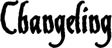
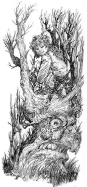

El Umbral de Arcadia
Eliseo ap Liam: 2003 - 2008
Eliseo ap Liam: 2003 - 2008

Me raptaron del seno de mi familia cuando sólo era un bebé, y cada día que pasa les estoy más agradecido.

Los changelings pueden llegar a este mundo de muchas maneras, pero la práctica de raptar niños y reemplazarlos por bebés primonatos es la más común. El hada crece entre los humanos y poco a poco comienza a perder parte de su naturaleza, ganando a cambio un alma humana (siempre y cuando, por supuesto, el niño no sea bautizado). Los humanos que crecen entre las hadas, por otra parte, pierden su naturaleza humana; y aunque mantienen sus almas, también encuentran una cierta afinidad con los reinos feéricos y las energías mágicas que en ellos se manejan. A veces los changelings son el resultado de la procreación de un humano y un feérico, siendo ésta una práctica que en la actualidad está ganando el favor de las Cortes ya que necesitan reforzar sus filas antes el inicio de la Guerra. Corren rumores de que las Cortes del Verano y el Invierno realmente tienen lo que llaman “establos” de humanos con el único fin de criar changelings. Aunque éstos no son estériles, lo cierto es que tampoco son capaces de dar vida a nuevas hadas a través de la procreación sexual. El hijo de dos changelings o de un changeling y un mortal generalmente estará “tocado por las hadas”, mostrando ojos de un tono extraó o cualquier otra característica feérica, pero no podrá manejar la magia y no tendrá una verdadera conexión con las Nieblas.Los niños raptados y los primonatos abandonados no son la única fuente de changelings. Las hadas, en ocasiones, encantan y dominan humanos para convertirlos en esclavos, que sirven a veces a sus maestros durante tanto tiempo que se distancian de la humanidad y finalmente se convierten en changelings. Los amos de semejantes sirvientes humanos, en ocasiones piden a su propia Corte que Acoja y Bautice a estos excepcionales individuos.
A diferencia de los primonatos, que suelen compartir elementos comunes durante sus Acogidas, los changelings reciben su educación en modos diferentes dependiendo de dónde fueron criados y de lo que saben de su verdadero patrimonio. El crecer entre las hadas no significa necesariamente que un changeling tea una vida mejor. Las familias primonatas tradicionalistas consideran a los changelings casi siempre como hijos ilegítimos y mestizos, sirvientes poco más valorados que los sorites. Los changelings nacidos en semejantes condiciones, muchas veces huyen y terminan como hadas del Solsticio, o viven encubiertos en asentamientos humanos. En realidad, las visiones más tradicionalistas varían de un dominio a otro, pero las hadas de esta ideología raramente consideran que los changelings pertenezcan a su sociedad, aunque acepten su existencia. Las hadas liberales se ocupan de los changelings como si fueran su descendencia primonata, y aquéllos reciben la misma consideración durante la Acogida que sus hermanos de sangre pura. Además de la Acogida normal, también se les enseña cultura e historia humana de sirvientes humanos raptados, para que así se conviertan en hábiles espías y diplomáticos en el mundo humano.
Los changelings que crecen entre los humanos reciben uno de estos dos tipos de educación: la humana o la changeling. Los humanos que no se dan cuenta de que tienen un changeling ellos, le tratan como lo harían con cualquier mortal. Sin embargo, para los niños primonatos cambiados y los descendientes directos de un hada y un humano, adaptarse a sus poderes y a su patrimonio suele ser una experiencia terrible. La primera ocasión en la que verdaderamente manejan Dominios es a través de un desatar, lo que casi siempre constituye un proceso traumático. Algunos doman las energías mágicas a través de su sola voluntad, pero esto a veces, aísla al changeling del resto del pueblo.
Algunas familias llevan a sus changelings a la Iglesia y los bautizan en un intento de incluirles en la cultura y la fe humanas. Como resultado de tener alma mortal, sobreviven al bautismo, pero pierden su naturaleza feérica para siempre, volviéndose completamente humanos. Los que consiguen escapar a este horrible destino, finalmente llegan a adaptarse a sus verdaderas naturalezas y abandonan sus casas, ya sea de mano de algún hada con la que se hayan encontrado, o por su propio pie, en busca de sus “verdaderas” familias.
Durante milenios, a los changelings se les prohibió tener cierta posición dentro de la comunidad feérica; pero esta prohibición ha ido cambiando con los años, gracias en parte al golpe de Tandoor durante la Batalla de Hielo). Aunque no sean bien aceptados entre todos los inanimae y los Primonatos, a los changelings ahora se les permite gobernar sobre otras hadas (aunque en los dominios en los que esto ocurre, a veces surgen tensiones entre los Orígenes). Aunque las fortalezas dominadas y controladas por es feéricos son menos que las gobernadas primonatos e inanimae, los changeling tienen el mismo derecho a asumir el liderazgo. Las hadas usan a los changelings para aquellos tratos que requieran no levantar sospechas de que los feéricos puedan verse envueltos en ellos, o cuando necesitan infiltrarse en algún centro de poder humano. De hecho, sus habilidades para el manejo de la etiqueta y la cultura humanas resultan incomparables; por esto hay quien cree que el futuro yace en manos de los changelings y no de los primonatos ni de los inanimae. Semblante: El estado natural de existencia para un changeling antes de asumir su primer Rasgo es la forma humana. Incluso después de haber adoptado un semblante feérico un changeling es capaz de alternar ambas apariencias a su voluntad. Cambiar de la forma humana al semblante feérico requiere una tirada de Nieblas (dificultad 6); y cambiar de nuevo requiere una tirada de Tejido (también a dificultad 6). Cambiar de en una u otra dirección lleva un turno completo, y las posesiones y la ropa no cambian de tamaño ni de forma (lo que decir que si el semblante feérico de un changeling resulta considerablemente más grande que su forma humana, se le recomienda que, en el momento del cambio, lleve puestas ropas acordes con la talla que luego tendrá).
Los changelings nunca toman una apariencia tan extraña ni tan animal- como los primonatos o los inanimae, cuyas naturalezas feéricas se vuelven más fuertes al aumentar el número de Rasgos. Un changeling, no importa lo viejo que sea o lo poderosa que sea su magia, siempre será parcialmente humano. Tienden a mantenerse dentro del rango de estatura humana, y aunque su piel, sus ojos o su pelo puedan delatar su patrimonio feérico, no pasarán de tener, por ejemplo, un color un tanto inusual, pero nunca alcanzarán las manifestaciones obviamente sobrenaturales de los primonatos y los inanimae. Esto no quiere decir que los changelings no puedan desarrollar Rasgos Mayores o llegar a tener una apariencia tan sobrenatural como otras hadas; pero cuando lo hacen, estos Rasgos tienden a tomar formas que los humanos comprenden fácilmente, como un halo de luz brillante o enormes músculos.
Derecho de nacimiento: Gracias a los íntimos lazos que les unen al mundo mortal, los devastadores efectos de los Ecos afectan menos a los changelings. Los Ecos que influyen sobre ellos se tratan como si fueran de un nivel por debajo de lo que la tirada indique.
Debilidad: Del mismo modo en que sus lazos con el mundo mortal ayudan a proteger a los changelings, también les distancian distancian del mundo feérico y esto afecta a su habilidad inherente para manejar los Dominios. Los changelings reciben un punto menos en sus Dominios que los primonatos y los inanimae en el proceso de creación de personaje, y son incapaces de dar forma feérica a los sprites a través del uso de los Dominios. Además, mientras están en forma humana, no pueden realizar Desatares; y sólo pueden utilizar los cantrips que conozcan.
Nieblas Inicial: 2
Tejido Inicial: 4
Dominios Inicial: 2
Aportado por Eliseo ap Liam